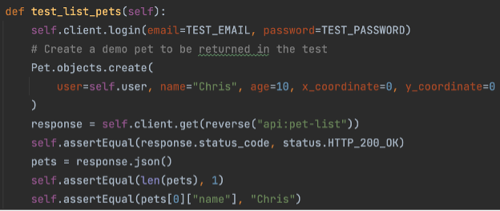
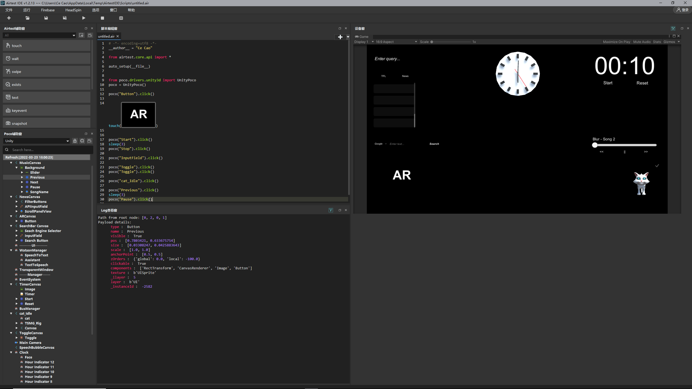

Testing Strategy
WAPETS v2 is run on local machines while interacting with a web server to store and retrieve user information, thus it is very important that all aspects of the application are thoroughly tested to ensure that it runs without hiccoughs. Before deploying the project, we must make sure that the functionalities provided work as intended and that both the web server and application itself work seamlessly in the way we intended them to. For this reason, we’ve set up a comprehensive testing plan provided below.
Since most of our project consists of creating a GUI for users to interact with, we had to make sure we included user acceptance testing as part of our testing strategy, seeing as how testing individual UI components is not possible. For the code used for the web server, we implemented integration testing as the API used was very thin, meaning that a unit test would be essentially the same thing as an integration test. The benefit of implementing integration testing was that the URLs of the API were tested as well as the underlying API functionality.
Integration Testing
For testing the web server by integration testing, we used Python’s unittest library (which can also be used for integration tests). We made use of Django’s helper functionalities on top the unittest library, combining the djangorestframework (DRF) to build on top of this further.
Django provides a “test client” which can be used to simulate requests to a URL, as though a user was making the request through a web browser
The DRF extends this with a couple of helpful tweaks, such as the ability to easily specify the format of data being sent (json/multipart/etc.) and the ability to automatically send multipart data with PUT and PATCH, as opposed to just POST.

For each different piece of functionality of the pet API, the test sets up some data for the scenario and makes a request using the test client. It then checks that the returned response from the server is correct, and that the resulting DB state is correct.
As a result of the tests, we were able to be very confident that all our users will be able to interact with this API stably and consistently to ensure a good experience for all. We achieved 100% test coverage within the user facing portions of the app, which is a useful metric in showing that we have covered all bases of the web server with our integration tests.
UI Testing
There are mainly three approaches to UI Testing - Manual Testing, Record-and-Playback Testing, and Model-Based Testing.
We found the manual testing method to be very time-consuming and inefficient, given the large scale of the GUI and the many components, hence we did some further reserach and found a UI Automation Test Framework for games and apps called “Airtest” (Airtest Project: https://github.com/AirtestProject), which has a cross-engine test automation framework based on UI inspection called "Poco".
Poco uses a method of testing that is similar to both record-and-playback testing (where the testing tool records the activity of the user and then imitates it) and model-based testing (where the run time behaviour of a project is checked against predictions made by a model), hence covering our needs when testing the UI. Poco has Unity SDK support, so we followed the tutorial given on the GitHub repository step by step, and wrote the scripts to test our project. The full documentation of the tests can be found under the Poco repo, but in short the tests are created in Python. Each component is specified by using a Poco object, instantiated by "poco = UnityPoco()". The poco() object is then instantiated with the specified GUI component and used to carry out the tests on each component.  As seen above, poco() imitates the GUI component specified inside and tests its various methods, such as .click() for buttons. When the script is run, the Log at the bottom displays whether or not the tests have passed or whether they've failed for any reason. We can then use this information to get a better idea of where our GUI is failing and where it is implemented correctly.
Using Poco for testing both saved us a lot of time (as we didn't have to manually come up with writing scripts but could instead follow a framework) and greatly improved our testing efficiency.
After we implemented the automated testing provided by Poco, we were able to ensure that the UI functioned smoothly and efficiently without encountering any hiccoughs. Although Poco doesn't provide the test coverage in terms of percentage, we ensured that we tested all components of our GUI and made sure that all of them passed, thus obtaining (somewhat indirectly) 100% coverage for our GUI components. All of our UI tests passed, meaning that our GUI -barring any exceptional bugs- functions fine and can be deployed for users to interact with.
User Acceptance Testing
After conducting our own test methods, we asked 2 other users to test our project and provide feedback on whether they were satisfied with their experience. The testers' real names are hidden for privacy purposes, however the remaining information of each tester is real.
Geralt Tester
72 years old, retired army veteran
Spends most of his time at home watching TV, uses his mobile phone and computer occasionally with the help of his wife to read news
Jennifer Codelover
54 years old, retired teacher
Spends her free time coming up with mock interior designs
Our testers were chosen with the intent that they would be in our potential userbase, which would allow us to gain a better understanding of what we should pay attention to more in our project. This in turn also allowed us to improve our existing project and understand the code from a user standpoint rather than a software developer one. With this in mind, we separated our test cases into the following cases stated below.
Test Cases
Our testers were chosen with the intent that they would be in our potential userbase, which would allow us to gain a better understanding of what we should pay attention to more in our project. This in turn also allowed us to improve our existing project and understand the code from a user standpoint rather than a software developer one. With this in mind, we separated our test cases into the following cases stated below.
Test Case 1
We had our testers use the desktop GUI, searching for bus times and then trying to retrieve business-related news.
Test Case 2
We had our testers use the desktop application and interact with the pet, telling them about the different interactions (depending on the mouse clicks) and having them try the different clicks out.
Test Case 3
We made our testers use the mobile GUI and interact with the mobile pet, having them move the pet around.
Test Case 4
We asked our testers to use the application on both mobile and desktop to interact with the pet using their voice, making them try out different commands and have a chat with the pet.
We asked our testers to rate the given acceptance requirements from 1 to 10, where a 1 would serve as "strongly dislike" and a 10 would serve as a "strongly like". Their individual scores are given below.
| Requirement | Tester 1 | Tester 2 | Comments |
|---|---|---|---|
| Bus times are retrieved and displayed correctly | 9 | 7 |
Positives: Retrieving the bus times is "easy" to use, very clear, buttons are "nice and visible" Negatives: Only allows for one type of search, "would have preferred maybe more options to see which bus is where" |
| Keyword news search brings back relevant articles | 10 | 10 |
Positives: Again, "easy" to use, being able to click on news article titles to open link is "useful and saves time", big and clear text |
| Pet responds to mouse clicks and dragging | 8 | 9 |
Positives: Pet interactions are "cute" and engaging, "jump" easter egg is nice touch Negatives: Pet is sometimes slow to react |
| Pet responds to mouse clicks | 8 | 9 |
Positives: Pet interactions are "cute" and engaging, "jump" easter egg is nice touch Negatives: Pet is sometimes slow to react |
| Dragging the pet around with mouse | 8 | 9 | Positives: Fun to play with |
| Pet responds to user touch on mobie | 10 | 10 |
Positives: "like" how pet changes height if there is couch, pet walking around is interesting Negatives: Sometimes pet is too big when close by |
| Pet design (for mobile and desktop) | 7 | 10 |
Tester 1: Mobile pet is a bit human-like, desktop pet is cute Tester 2: Both pets are "really cute", likes desktop pet design |
| Chatting with pet | 6 | 7 |
Positives: Interesting to interact with, nice and clear response, feels "as if chatting with someone" Negatives: Responses take long sometimes |
| Voice commands for the pet | 10 | 9 |
Positives: Very helpful, "convenient" instead of having to search manually, like the "range of commands" that they can perform |
Conclusion
At the end of our user acceptance testing, both our testers mentioned that they enjoyed interacting with the pet and that the pet would be sufficient to help them with their daily activities. As a result of their feedback, we can conlude that our project has mostly served its purpose, and with a few tweaks based on the comments of our testers, we can make our project appeal in a more comprehensive and engaging way for our target audience. The feedback provided by our testers also reassured our progress thus far and further motivated us to improve upon the project.